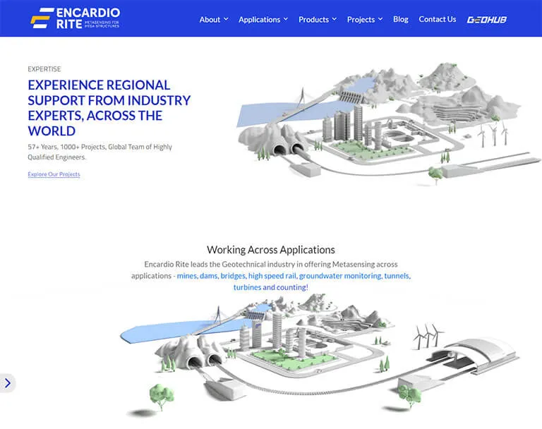
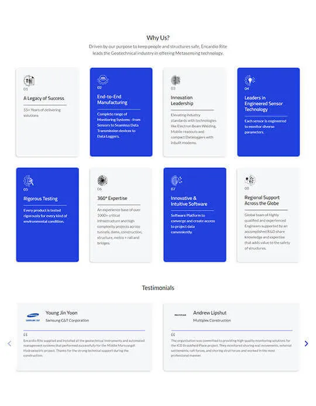
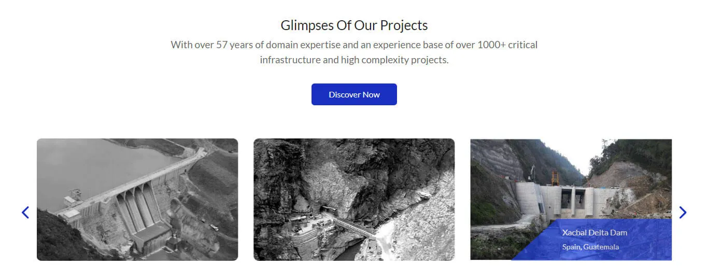

Migration of Geotechnical industry to Azure & M365
Encardio Rite, a leader in geotechnical solutions, has made headlines using advanced technology called Metasensing within several disciplines such as mines, dams, bridges, etc. To keep up with the latest tech trends, Encardio Rite wanted to take their systems and migrate them into the cloud. Cloud Converge was selected as the cloud partner and has deep knowledge and expertise in cloud solutions – Cloud Converge assisted Encardio Rite in migrating their complex Metasensing system to the Microsoft Azure and M365 clouds.


Challenge & Solution
Encardio Rite’s Metasensing applications were deployed in a variety of important contexts, each with its own unique requirements. Moving that whole complex system to the cloud was not without its challenges of securing data from safety, ensuring availability, and confirming that everything works smoothly across each context of use.
Cloud Converge thought carefully about how to migrate clients’ Metasensing applications to Microsoft Azure and M365 for their users. We evaluated the existing configuration to get a solid idea of what is to be moved and what can potentially go wrong in the moving process.
Configuring Azure : We configured Azure, Microsoft’s cloud service, specifically for the application of geotechnical applications in context and assuring the process flowed.
Secured Move : Our team migrated the information (data) from client systems to the cloud in a secure manner, minimizing downtime.
Integration : Cloud Converge worked closely with Encardio Rite’s technical team to connect Metasensing applications with Azure, ensuring they fit and would work together.
Result
Transitioning to Azure and M365 provided huge strategic advantage for Encardio Rite. Azure’s flexibility allowed Encardio Rite to adjust, scale, and grow their Metasensing applications seamlessly as business needs changed. Microsoft’s cloud technologies helped ensure the geotechnical applications ran effectively and reliably across applications and associated uses. Azure’s pricing model empowered clients to maximize the utility of their budgets, paying only for what they used, on a usage basis, which was cost effective for the client. Smoother Operations: The cloud-based shift smoothed out operations at an everyday level, facilitating team collaboration and making it easier to work with geotechnical data across range of applications.

Conclusion
By using the Cloud Converge strategic partnership model, client was able to migrate their Metasensing applications to Azure and M365 which is significantly decreasing their footprint at the front end of innovation in the geotechnical world. Furthermore, the partnership was able to address the multiple challenges presented by the different applications while allowing for future scalability, reliability, and efficiency in geotechnical operations.